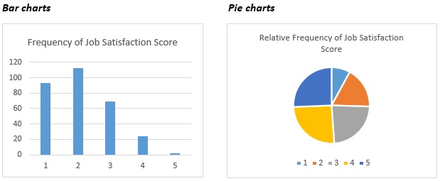

Section 1: Numbers, Variables, Functions, and Equations
Calculus Lecture Notes
2025-09-10
Lecture 7 Introduction to Statistics
Definition of Statistics
Statistics is the study of collecting, analyzing, and interpreting data. In the time of information society, data are flooding everywhere. Statistics is the tool for transforming data into useful products.
7.1.1 Sources of data
Primary data: data collected by the researcher himself.
Secondary data: data collected by others.
Using Google Form to collect primary data
- Step 1 Register a Google account
- Step 2 Add a Google Form in the Google drive
- Step 3 Design the survey questions via editing the Google Form
- Step 4 Preview the Google Form and the Google Sheet for a pilot run
- Step 5 Distribute the final Google Form via email or via a Link or via a QR code
7.1.2 Components of a data set
As a result of a data collection process we obtain a data set. A typical data set looks like a data table as follows.
knitr::include_url(url = "https://docs.google.com/spreadsheets/d/1EmcgT4ztn_ux0r3exca0taNEwU2fsMaQvsHYbGibHOE/edit#gid=0", height = "450px")Four components of a data set: Elements, variables, observations, and size
- Element: is the basic unit on which we measure its characteristics and collect the data. The set of all elements is called population. A census is a survey that collects data for the entire population. Data collected for a subset of the population is referred to as sample data.
- Variables: describe common characteristics of elements.
- Observation: is the records of the values measured on one element
- Size: is the total number of observations in the data set. It is also the total number of elements in the data set. Often, we call a data set sample data set and the size of the data set sample size.
7.1.3 Variable types and scales of measurement
Types of statistical variables - categorical - numerical
scale of measurement - For categorical variables: nominal or ordinal - For numerical variables: discrete or continuous
Examples:
- Gender is a nominal categorical variable despite that it is coded in numbers 1 and 2
- Job satisfaction score is an ordinal categorical variable because we know 2 is above 1 and 3 is above 2, etc. But we do not have 1 + 1 = 2.
- Age is discrete numerical variable because it takes only integer values.
- Salary is a continuous numerical variable.
7.1.4 Statistical Way of Study
Population and Sample
Statistics is often applied to solve problems associated with large numbers of elements called a population. The statistical study begins with collecting data that characterize the problem. If data is collected from the entire population, it is called a census. Typically, data are collected not from the entire population but only from a subset called a sample. The main task in statistics is analyzing the sample data in order to draw conclusions about the population.
Descriptive Statistics and Inferential Statistics
Describing and making statements about sample data are tasks of descriptive statistics, typically involving the use of tables, graphs, numerical measures, and text to summarize and illustrate data. Making conclusions and statements about the population are tasks of inferential statistics, typically involving making assumptions about the population, estimating parameters, testing hypotheses, forecasting, and constructing statistical models.
Observational Studies and Experimental Studies
Statistical studies can be classified into observational studies and experimental studies. In an observational study, researchers observe what happens naturally instead of intervening with specific treatments. In an experimental study, researchers control the study by controlling as many variables as possible. While in business and economics most studies are observational, in medicine and psychology most studies are experimental.
7.1.5 Characteristics of a statiatical variable
In classical scientific disciplines like mechanics or physics, we are accustomed to using a variable to describe a single object, such as the speed of a car, the body temperature of a person, or the income of the Smith family. These variables typically assume one value at a given time point. In contrast, a statistical variable is used to describe a large number of objects, such as the “Salary” variable in the dataset above, which describes the salaries of 300 employees. Therefore, to understand a statistical variable, we must always remember that it typically assumes different values simultaneously, and we aim to comprehend the variable as a whole with all its possible values.
7.2 Descriptive Statistics
Use the following 4 ways to to describe statistical variables.
- Tables
- Graphs
- Numerical measures
- Texts
7.2.1 Frequency tables
Beside the frequency table, a bar chart or a pie chart is use to to present the data.

Data of one statistical variable appears as one column in a data set. Frequency is the counts a particular value appears in the column. We use a frequency table to summarise the data, where all possible values in the data are listed in the first column and the corresponding frequencies in the second column.
Using mathematical notation, the frequency table can be written as follows:
p(Job Satisfaction=1)=0.31 \(\hspace{2cm}\) p(Job Satisfaction=2)=0.37
p(Job Satisfaction≤3)=0.91 \(\hspace{2cm}\) p(2≤Job Satisfaction≤3)=0.60
The last formula above indicates that the proportion for the variable Job Satisfaction to assume a value between 2 and 3 is 60%.
There are valid reasons for including a relative frequency column in the frequency table. It is important to remember that the ultimate objective of the statistical study is to address job satisfaction issues within the population. For a company with more than 400 thousand employees, the fact that 91 employees scored “1” for Job Satisfaction may not be as relevant as the realization that 31% of the employees scored “1”. Sometimes, a column of cumulative frequency is included because it provides information about the percentage of scores up to a certain point.
7.2.2 Diagrams
7.2.2.1 Column charts, bar charts, and pie charts

In the charts above we see that Job Satisfaction can assume 5 different values and the most frequent value is 2 then 1 and less less frequent values are 3, 4 and 5. While the bar chart emphasizes the absolute frequencies the pie chart is more suitable to show the relative frequencies.
7.2.2.2 Histogram
For numerical variables, we need to group the data first and then create the frequency table. The reason is that, in principle, it may happen that no two values of a continuous variable are identical, and hence the frequency would always have value 1 for all possibly different values.
For the variable Age, we have:
Choice of the number of bins and its impact
A histogram with peaks in the middle and lower values at both ends indicates that the majority of the data is concentrated in the middle, while the extremes have fewer observations. Conversely, a histogram that is very flat over a large range suggests that the data are spread out rather than concentrated within a specific range. If a histogram has a tall peak in the middle and the data range is narrow, it implies that the data are tightly concentrated around the middle.
The shape of a histogram describes how the data of a statistical variable are distributed. In our daily lives, it works quite well to use two categorical variables {tall, short} and {thin, fat} to communicate the shape of a human figure. Similarly, we can use two numbers to describe the distribution (figure) of a statistical variable. The first number is the sample average that describes the center of the data, and the second number is the standard deviation that describes the dispersion of the data from the center. The numbers that characterise the distribution of statistical variables are called numerical measures.
7.2.3 Numerical measures
7.2.3.1 Measures of central location
For given data \(x_{1},x_{2},x_{3},\ldots,x_{N}\), we have
Sample Average:
\(\overline{x} = \frac{x_{1} + x_{1} + \ldots{+ x}_{N}}{N} = \frac{1}{N}{\sum_{i = 1}^{N}x}_{i}\)
Sample Median:
Order the data in increasingly: data \(x_{(1)} \leq x_{(2)} \leq x_{(3)} \leq \ldots \leq x_{(N)}\), median of this data set is the value of the data element in the middle, i.e. 50% percent of the data are less than the median and 50% are larger than the median.
\(x_{\text{Median}} = x_{\big(\frac{N + 1}{2}\big)}\) for uneven \(N\).
\(x_{\text{Median}} = \frac{x_{\big(\frac{N}{2}\big)} + x_{\big(\frac{N}{2}+1\big)}}{2}\) for even \(N\)
For a small group of kindergarten kids, average age provides useful information of the ages of the group. For the same group of kid with a senior nursery teacher average age does provide useful information. In this case sample median is a more appropriate measure.
Percentiles
Median of a data set is also called 50 percentile of the data set, because at least 50% of the data are less than or equal to \(x_{\text{Median}}\) and at least 50 percent of the data are larger or equal to \(x_{\text{Median}}\). We denote 50 percentile by \(x_{\left\lceil 0.5 \right\rceil}.\) We have \(x_{\text{Median}} = x_{\lbrack 0.5\rbrack}\).
Beside the 50 percentile, many other percentiles are also used. When we read in news: 20% of households in Australia earned less that $25000 a year. $25000 was the 20 percentile of household income in Australia.
We call the 25 percentile the lower quartile and the 75 percentile the upper quartile. For the lower quartile \(x_{\left\lceil 0.25 \right\rceil}\), we have at least 25% of the data less than or equal to \(x_{\left\lceil 0.25 \right\rceil}\) and at least 75% of the data are larger or equal to \(x_{\left\lceil 0.25 \right\rceil}\). With two different percentiles we can easily know how many percent of the data lie within these two different percentiles. E.g. between the lower quartile \(x_{\left\lceil 0.25 \right\rceil}\) and the upper quartile \(x_{\left\lceil 0.75 \right\rceil}\), there are at least 50% of the data. Formally
\(p\left( x_{\lbrack 0.25\rbrack} \leq x \leq x_{\lbrack 0.75\rbrack} \right) = 50\%\)
This above equation says, 50% of the data \(x\) lie within the interval \(\left\lbrack x_{\lbrack 0.25\rbrack},x_{\lbrack 0.75\rbrack} \right\rbrack\). Similarly, we have
\(p\left( x_{\lbrack 0.16\rbrack} \leq x \leq x_{\lbrack 0.84\rbrack} \right) = 68\%\).
\(p\left( x_{\lbrack 0.025\rbrack} \leq x \leq x_{\lbrack 0.975\rbrack} \right) = 95\%\).
The last equation say, taking out 2.5% at both ends it remains 95% in the middle.
Mode: is the value of the data point with highest frequency for categorical data. For numerical data, mode is the interval (group) with highest frequency.
7.2.3.2 Measures of variation (dispersion):
Sample variance
\(s_{X}^{2} = \frac{\left( x_{1} - \overline{x} \right)^{2} + \left( x_{2} - \overline{x} \right)^{2} + \ldots + \left( x_{N} - \overline{x} \right)^{2}}{N - 1}\) =\(\frac{1}{N - 1}\sum_{i = 1}^{N}{(x_{i}} - \overline{x})^{2}\)
The magnitude of variance is measured in squared unit of \(X\) which is it difficult to comprehend. Therefore, people prefer to use the square root of variance called the standard deviation as a measure of variation.
Sample standard deviation \(\text{SD}(x) = s_{X} = \sqrt{s_{X}^{2}}\)
When the sample standard deviation is larger the data points are spread far away from the center, while when it is small the data point are located closer to the center. Other measures of variation are range and interquartile range.
Interquartile range \(IQR = x_{[0.75]} - x_{[0.25]}\)
The interquartile range give the interval of the middle 50% of the data.
Range \(L = \ x_{\text{MAX}} - x_{\text{MIN}}\)
7.2.4 Rules of 68, 95, and 99.7

The rules of 68, 95 and 99.5 help us with using sample average and sample standard deviation to gauge the distribution of data.
For the data of Salary as an example with \(\overline{\text{Salary}} = 52.5\ \) and \(\text{SD}\left( \text{Salary} \right) = 9.3\), the rules tell us roughly 68% of the employees (or of the salary data) earn between $43.2K and $61.8K and roughly 95% of them earn between $33.9K and $71.1K. Does this statement sound like a magic?
By mathematical notation the statement can written as follows
\(p(52.5 - 9.3 \leq Salary \leq 52.5 + 9.3) = p(43.2 \leq Salary \leq 61.8) \approx 68\%\)
\(p(52.5 - 2 \times 9.3 \leq Salary \leq 52.5 + 2 \times 9.3) = p(33.9 \leq Salary \leq 71.1) \approx 95\%\)
The rules apply well when the data have bell shaped distribution, i.e., the histogram is roughly symmetric and has one peak.

Summary: descriptive statistics is all about describing (1) possible values of the variable and (2) how frequent each value or each group of values appear in the data. Statistician used to call these two aspects by “distribution of the variable” or distribution of the data.
In frequency tables all possible values are in the first column and frequencies in the second column. In a bar chart all possible values are on the horizontal axis and the frequencies are represented by the bars. The sample average, median and mode give the centre of the distribution and the standard deviation can be used to describe how concentrated the data are around the centre (68, 95, 99.7 rule). Quartiles and interquartile range can also be used to describe the location and the concentration of data.
The following video clip shows how to create frequency tables and charts using Excel.
7.2.5 Descriptive statistis for two statistical variables
Two way tables for two categorical variables
Like in univariate cases, we also use frequency tables to summarise two statistical variables. Since we have two variables the frequencies for the pair of values of the two variables are organised in a two-way table.
| Promotion Gender |
Yes | No | Marginal Frequency |
|---|---|---|---|
| Male | 75 | 39 | 114 |
| Female | 116 | 70 | 186 |
| Marginal Frequency |
191 | 109 | 300 |
In the two-way table we observe which combinations of values of the two statistical variables have the higher frequencies and which combinations have lower frequencies. The marginal frequency in the last column is the row sum of the two-way table. It is the frequency table for the variable Gender. The marginal frequency on the last row is the column sum the the two-way table. It is the frequency table of the variables Promotion. So a two-way frequency table contains not only frequencies of all combinations of two variables, it contains also the frequency table of each variable. One may want to know given the marginal frequencies of two variabales, can we uniquely determine the frequencies in the two-way table? The answer is given in the next section.
Clustered column charts
The two-way frequency table above can be presented as a clustered column chart.

In each cluster the columns show the gender frequency with in the promoted group and not promoted group, respectively.
7.2.5.2 One categorical variable one numerical variable
Relating a numerical numerical variable and a categorical variable together, the categorical variable separates the numerical into a number of groups corresponding to the values of the categorical variable. Main focus of study is comparing the numerical variable across different groups.
Two-way table for categorical and numerical variables
Similar to two categorical variables case, two-way frequency tables can be used to summarise one categorical variable and one numerical variable that has to be groupped before creataing the two-way frequency table.

Comparative box plots
Although clustered column charts can be utilised to present the two way table, comparative box plots are more often used to present the distribution of a numerical variable across many groups.
 A box plot summarises a numerical variable using 6 numerical measures: the min, the 25 percentile, the median, the average, the 75 percentile, and the maximum. The line at the lowest end is the minimum of the data, the lower side of the box in the middle is the 25 percentile, the line in the middle of the box in the median, the cross in the moddle of the box is the average, the upper side of the box is the 75 percentile, and the line at the upper end is the maximum of the data.
A box plot summarises a numerical variable using 6 numerical measures: the min, the 25 percentile, the median, the average, the 75 percentile, and the maximum. The line at the lowest end is the minimum of the data, the lower side of the box in the middle is the 25 percentile, the line in the middle of the box in the median, the cross in the moddle of the box is the average, the upper side of the box is the 75 percentile, and the line at the upper end is the maximum of the data.
Comparing the two bot plots we see the respective minimum and the respective maximum are the same in the two groups. The 25 percentile and the median are the same in the two groups, while the 75 percentile in the promoted group is slightly higher than that in the not promoted group.

Covariance and correlation coefficient
Sample covariance \(s_{\text{XY}} = \frac{\sum_{i = 1}^{N}{\left( x_{i} - \overline{x} \right)\left( y_{i} - \overline{y} \right)}}{N - 1}\)
If the sample covariance is positive, this implies the two variables move in the same direction. If the sample covariance in negative, these two variables move in the opposite direction. However, the magnitude the covariance depends on the units in which the variables are measured. It cannot reflect the strength of the relationship. To remove the effect of the measuring units, statisticians normalize the sample covariance by dividing it with the sample standard deviations. This ratio is called Sample correlation coefficient which in independent from the measuring units:
Sample correlation coefficient \(\rho_{\text{XY}} = \frac{s_{\text{XY}}}{s_{X}s_{Y}} = \frac{\sum_{i = 1}^{N}{\left( x_{i} - \overline{x} \right)\left( y_{i} - \overline{y} \right)}}{\sqrt{\sum_{i = 1}^{N}{\left( x_{i} - \overline{x} \right)\left( x_{i} - \overline{x} \right)\sum_{i = 1}^{N}{\left( y_{i} - \overline{y} \right)\left( y_{i} - \overline{y} \right)}}}}\)
The sample correlation coefficients are always between -1 and 1. If the correlation coefficient is close to 1, the two variables have strong positive linear relation, if it is close to -1, the two variables have a strong negative linear relation. If it is close to 0, there is no linear relations between the two variables.
Scatter plot
Scatter plots are often used to illustrate the relationship between two numerical variables. For two numerical variables, each pair of data is one point in the coordinate system representing the two numerical variables.
The scatter plot is a good visual tool to look at the relationship between statistical variables. If the two variables move in the same direction, the data cloud would scatter around an upwards sloping line. If the two variables move in the opposite direction the data cloud would scatter around a downwards sloping line. How to use Excel to create a scatter plot with a trend line?
The following graph is a scatter plot of Age and Years of experience.


7.2.6 Examples of applications:
Statistics can be use to predict the election results In this case, statistics is used to answer questions such as how can we predict the outcome of the election? How many data are sufficient to make a reliable prediction. We will be able to carry out these tasks in week 9.
Study of financial markets In this case, statistics is used to forecast the future returns of stocks. In week 11, we willlearn regression technique that is the most often used statistical method for forecasting.
Presentation of data These are the most often used technique in data business reporting. We will learn these technique in week 7 to week 8.
Summary
- Definition of statistics
- Skill(1) using Google Form for online data collection
- Understanding characteristics of statistical variables
- Skill(2) Creating frequency table, bar charts, and pie charts using Excel
- Skill(3) Creating frequency table, charts for two statistical variables
- Application of rules of 68, 95, and 99.7 to comprehend statistical variables